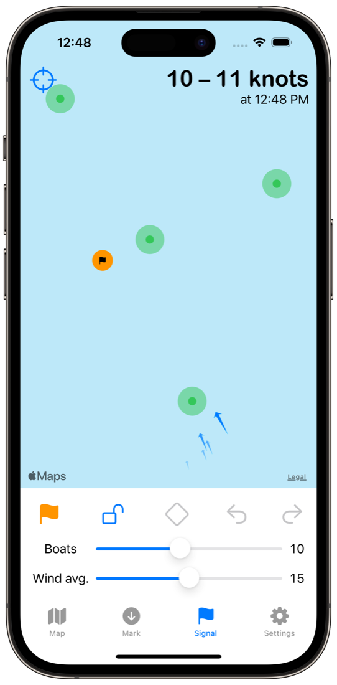

Proper Course
Proper Course is in beta testing through Apple’s TestFlight and is not yet available on the App Store. Please get in touch with us if you are interested in Proper Course.
Proper Course™ is an app that helps sailboat race committees create race courses with the proper geometry and keep them square to the wind.
Proper Course uses the GPS in your iPhone or iPad and wind information from a nearby weather station to place virtual marks on a map of your racing area. It then helps the mark boats navigate to each mark location so they drop the marks in the right place every time.
As you race, Proper Course monitors the wind and updates the map with the new ideal course, letting you see at a glance which marks need to be moved. It then directs the mark boat to the new mark locations so they can keep the course square to the wind. If local wind information is unavailable or inaccurate, the race committee can manually set the wind direction.
Behind the scenes, Proper Course provides real-time updates to all of the devices used by the race committee, so everyone is working with the latest information.
